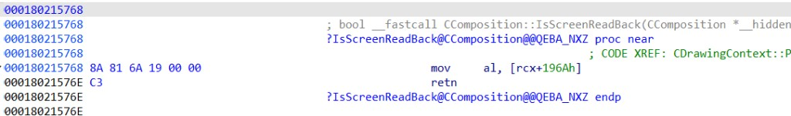

Hidden windows & anti-capture seriesTools: IDA · CE · Hawkeye Lab · Cursor MCP
1. Background & series
This series has three parts. This article is part 3:
Part 1: SetWindowDisplayAffinity — mechanism & detection
Part 2: Visual-layer hiding — mechanism & detection
Part 3 (this page): BitBlt-style “super screenshot” approach
Parts 1 and 2 covered anti-capture at the window level and on the Visual layer; this part leaves detection behind and explores a BitBlt capture-path “super screenshot” approach that can bypass those protections.
Like DisplayAffinity, a BitBlt call still enters the kernel first, then sends an LPC message to dwm.exe. Once dwm.exe receives it, execution lands in dwmcore!CaptureBitsResponse::RenderForCapture, then returns the same way.
In other words, a BitBlt screenshot is not decided in the kernel — it depends on DWM. More bluntly, dwmcore.dll is in charge.
3. Display vs Capture
From analysis, Display and Capture use separate RenderTargets but one shared pipeline: different surfaces, same global Visual tree and composition logic.
The whole frame is wrapped by this write/clear pair — the main breakthrough.
Further cross-check
A global IDA search for 196Ah leads to readback-related code; on Win11 and similar builds the PDB names it IsScreenReadBack():

Figure 3. CComposition::IsScreenReadBack — load [rcx+196Ah] and return; i.e. test the readback / capture semantic flag.
The ReadBack in the name is essentially asking “are we in readback/capture state right now?” That symbol is often missing on Win10; the machine analyzed here is Win11, which was convenient.
Lab validation
Static analysis only gets us this far; the real test is in a running dwm.exe: at the site marked in the red box in Figure 4, change the write from 1 to 0 and see whether a normal BitBlt can still capture protected windows.
Attach to dwm.exe with Hawkeye Lab and patch the Figure 1 site — one byte, changing the immediate in mov r15d, 1 from 01 to 00:
Trigger a normal BitBlt capture afterward — every anti-capture window and Visual shows up in the screenshot.
Interesting side effect
Under normal conditions the flag only lives for one capture frame: RenderForCapture sets g_pComposition + 0x196A to 1 before drawing, then clears it to 0 when the frame ends.
The reverse experiment is stranger: leave the capture code alone, but pin that byte to 1 in memory so DWM stays in readback semantics. Anti-capture windows disappear from the live desktop — not transparency, but the Display path skipping protected content because DrawVisualTree reads the same flag. Trigger another capture and let the normal set/clear cycle run; normal behavior returns.
5. Implementation walkthrough
The Lab immediate patch proves the idea; what you need in practice is a repeatable, automatable workflow. Patch the readback writer in dwm.exe remotely before the BitBlt call, so g_pComposition + 0x196A stays 0 for that capture frame; restore the bytes after the BitBlt call returns. No injection into dwm.exe, no hooks — only a very short-lived code patch.
This works for both Part 1 DisplayAffinity and Part 2 Visual hiding: capture-path protection is gated on readback semantics. Four steps:
Locate the patch site. In dwmcore.dll’s RenderForCapture, find the store to [g_pComposition+196Ah]. On the Win11 build analyzed here it is mov [rax+196Ah], r15b (Figure 1, preceded by mov r15d, 1). Encoding varies by build; scan for the pattern instead of hard-coding an absolute address.
Rewrite the instruction. Turn the “write 1” into “write 0”. Either change the store to mov [rax+196Ah], 0, or flip the immediate in mov r15d, 1 (01 → 00).
Take a normal screenshot. Call BitBlt.
Restore the patch. Write the original bytes back.
6. Hawkeye Lab
Three articles, one surface: DisplayAffinity, Visual hiding, and the BitBlt readback bypass. For game anti-cheat engineers the grind is rarely a single trick — it is whether the full loop — analyze behavior, locate code, refresh signatures, ship detection — can run fast, reliably, and again and again.
Hawkeye Lab is built for that workflow: industrial, repeatable anti-cheat instead of groping across disconnected tools. PDF reports land in one shot with findings and assessment dimensions together, ready to reference and act on.